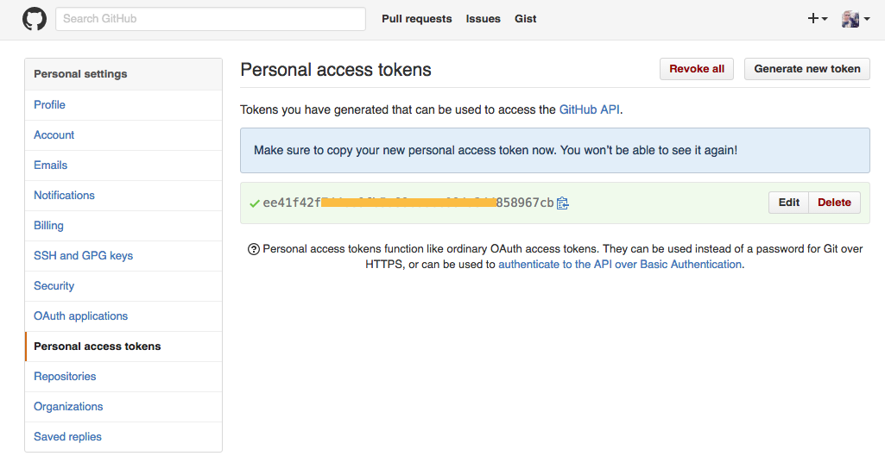

Yii是一个基于组件的高性能PHP框架，用于开发大型Web应用。Yii采用严格的OOP编写，并有着完善的库引用以及全面的教程。从MVC,DAO/ActiveRecord,widgets,cashing,等级式RBAC，Web服务，到主题化，I18N和L10N，Yii提供了今日Web2.0应用开发所需要的几乎一切功能。事实上，Yii是最有效率的PHP框架之一。
第一课 安装Yii2.0框架及环境配置
Composer安装静态资源索引插件和Yii2.0框架
yiisoft/yii2-app-basic
在 GitHub仓库下载
- 安装插件，创建一个projects 目录下安装 yii
☁ ~ php composer.phar global require "fxp/composer-asset-plugin:~1.1.1"
☁ ~ mkdir projects
☁ ~ cd projects
☁ projects php composer.phar create-project --prefer-dist --stability=dev yiisoft/yii2-app-basic yii
安装中可能出现需Token (hidden):提示，到GitHub -> Personal access tokens 如下图：

Yii2.0框架参考文档
归档文件安装
修改config/web.php文件，给cookerValidationKey配置项添加一个密钥
（通过Composer安装，刚此步骤会自动完成）
在下面插入一段密钥（若为空），以供cookie validation的需要
‘cookieValidationKey’ = > ‘在此处输入密钥’
Yii2.0框架目录结构
目录结构
basic/ 应用根目录
composer.json Composer 配置文件，描述包信息
console.php 控制台应用配置信息
web.php Web应用配置信息
commands/ 包含控制台命令类
controllers/ 包含控制器类
models/ 包含模型类
runtime/ 包含Yii在运行时生成的文件，例如日志和缓存文件
vendor/ 包含已经安装的Composer包，包括Yii框架自身
views/ 包含视图文件
web/ Web应用根目录，包含Web入口文件
assets/ 包含Yii发布的资源文件（javascript和css）
index.php 应用入口文件
yii Yii控制台命令执行脚本
– 后续完善中 –